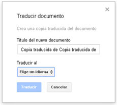

Gracias al eficiente traductor que posee esta herramienta, podremos traducir cualquier documento de texto a 53 idiomas diferentes.
Una vez abierto el documento a traducir, pincharemos sobre el menú Herramientas. Elegiremos entonces la opción Traducir documento…
Aparecerá una ventana emergente en la que podremos renombrar la copia traducida del documento original que el traductor va a crear, además de elegir el idioma deseado.
Por último, haremos clic sobre Traducir. Veremos entonces como nuestro documento ha sido traducido.
